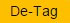

PRACTICE TEST
Disclaimer
1) This Practice Test is a demo for a "Computer Based Examination" for your practice and
familiarization
purpose only. This "Practice test" consist of 25 questions to be attempted in 18 Minutes 45
Seconds.
2) The actual question paper for the examination consist of 100 questions to be attempted in 1
hour
15
minutes time.
About Question Paper:
1) The Question Paper consists of multiple choice objective type questions with 4 options out
of
which only
1 is correct.
2) The computer based exam will be in bilingual i.e. English & Hindi Languages. Questions and
Answer
options
will appear in both the languages.
3) There is a TIMER (Clock) available on the TOP RIGHT HAND CORNER of the Screen; you are
requested
to keep
an eye on it for knowing the time remaining for the completion of the exam.
4) Each question carry 2 marks
5) Every correct answer will get 2 marks. 0.5 mark will be deducted for each wrong answer. No
marks
will be
deducted for unanswered questions.
6) Only one question will be displayed on the computer screen at a time. To attempt next question
the candidates should click on  or to go back
click on
or to go back
click on  button provided at the bottom of the
screen.
button provided at the bottom of the
screen.
7) The questions can be answered in any order within the given time frame. The candidate should
click with
the mouse on the correct choice, from 4 options given. In case, the candidate does not wish to
attempt any
question, it can be left blank.
8) The candidate can change the option of a question later by selecting a new option in case
he/she
wishes
to. In case candidate does not want to answer the question, he/she can deselect the answer by
clicking  provided against the question.
provided against the question.
9) To move back and forth between questions, candidates should use the OR button or click on the
question
number on the right hand side of the computer screen where question numbers would be displayed
along
with
the `attempted` and `not attempted` status
10) The answers will be saved whenever the candidate goes for next question, by clicking on OR  button.
button.
11) Candidates have the option to bookmark a question in case they want to review it at a later
stage by
clicking on the  button available at the bottom of the
screen. The Bookmark on a particular
question
can be
removed by clicking on
12) The question palette at the right of the screen shows the following status of each of the
questions
numbered.

PS: Questions which are attempted and marked for review would be treated as attempted questions
only as long as the candidate does not the option selected.
13) On the completion of the test duration, even if the candidate does not click on an answer or
does not click on  the button, a NIL result
will be saved automatically by the computer.
the button, a NIL result
will be saved automatically by the computer.
14) The candidate will only be able to submit the test on completion of the stipulated 1 hour and
15 minutes (75 Minutes). In case a candidate not completed his/her test at the completion of
stipulated 1 hour and 15 minutes (75 Minutes), the system shall automatically submit the test.
"ALL THE BEST"
अभ्यास परीक्षा
डिसक्लेमर
1) यह अभ्यास परीक्षण आपके अभ्यास हेतु और आपको कंप्यूटर आधारित परीक्षा से परिचित कराने के लिए
केवल
एक प्रदर्शन है । इस अभ्यास परीक्षण में 25 प्रश्न हैं, जिन्हें 18 मिनट 45 सेकंड में हल करना
होगा।
2) परीक्षा के लिये वास्तविक प्रश्नपत्र में 100 प्रश्न होगें जिन्हें 1 घंटे 15 मिनट के समय में हल
करना होगा।
प्रश्नपत्र के बारे में:
1) इस प्रश्नपत्र में बहु-विकल्पीय वस्तुनिष्ठ प्रश्न हैं जिसमें 4 विकल्प दिए गए हैं, जिसमें से
केवल
1 विकल्प सही है ।
2) कंप्यूटर आधारित परीक्षा द्विभाषी अर्थात अंग्रेजी एवं हिन्दी भाषा में होगी । प्रश्न और
उत्तर
के विकल्प दोनों भाषाओं में दिखाई देंगे।
3) स्क्रीन के शीर्ष दाएं कोने में टाइमर (घड़ी) उपलब्ध है; आपसे अनुरोध है कि परीक्षा पूरी करने के
लिए
शेष समय की जानकारी हेतु इसे देखते रहें।
4) प्रत्येक प्रश्न #2325;े लिए 2 अंक निर्धारित हैं।
5) प्रत्येक सही जवाब के लिए 2 अंक मिलेंगे। प्रत्येक गलत उत्तर के लिए 0.5 अंकों की कटौती की जाएगी।
अनुत्तरित प्रश्नों के लिए अंकों की कटौती नहीं की जाएगी।
6) एक बार में कंप्यूटर स्क्रीन पर केवल एक प्रश्न प्रदर्शित किया जाएगा । अभ्यर्थियों को अगले
प्रश्न
पर जाने के लिए स्क्रीन के नीचे दिए गए बटन पर
क्लिक करना चाहिए अथवा पिछले प्रश्न पर जाने के लिए
पर
क्लिक करना चाहिए ।
7) प्रश्नों को दी गई समय सीमा के भीतर किसी भी क्रम में हल किया जा सकता है । अभ्यर्थी को 4
विकल्पों
में से सही विकल्प पर माउस से क्लिक करना होगा । यदि अभ्यर्थी प्रश्न का उत्तर नही देना चाहता है
तो वह
उस प्रश्न को खाली छोड़ सकता है ।
8) अभ्यर्थी यदि चाहता है तो वह नए विकल्प का चयन कर किसी प्रश्न के विकल्प को बदल सकता है । यदि
अभ्यर्थी प्रश्न का उत्तर नही देना चाहता है तो वह प्रश्न के सामने दिए गए को क्लिक कर उत्तर को
अचयनित कर सकता है ।
9) प्रश्नों में आगे और पीछे जाने के लिए, अभ्यर्थियों को या बटन का इस्तेमाल करना चाहिए
अथवा
कंप्यूटर
स्क्रीन के दाएं हाथ की ओर दी गई प्रश्न संख्या पर क्लिक करना चाहिए जहां पर प्रश्न संख्याओं को
`किए
गए` या `न किए गए` की स्थिति के साथ प्रदर्शित किया जाएगा।
10) जब भी अभ्यर्थी या बटन पर क्लिक करके अगले प्रश्न पर जाता है तो उत्तरों को सहेज लिया जाएगा ।
11) अभ्यर्थियों के पास स्क्रीन के निचले हिस्से में उपलब्ध  बटन पर क्लिक करके किसी प्रश्न को
बुकमार्क
करने का विकल्प है, अगर वे बाद में उसकी समीक्षा करने की इच्छा रखते हैं । एक विशेष प्रश्न पर
मौजूद
बुकमार्क को पर क्लिक करके हटाया जा सकता है ।
बटन पर क्लिक करके किसी प्रश्न को
बुकमार्क
करने का विकल्प है, अगर वे बाद में उसकी समीक्षा करने की इच्छा रखते हैं । एक विशेष प्रश्न पर
मौजूद
बुकमार्क को पर क्लिक करके हटाया जा सकता है ।
12) स्क्रीन के दायीं ओर प्रश्न पैलेट में प्रत्येक संख्यांकित प्रश्न की निम्नलिखित स्थिति दिखाई
देती है ।
कृपया ध्यान दें: जिन प्रश्नों का उत्तर दिया गया है और समीक्षा के लिए चिन्हित किया गया है उन
प्रश्नों को केवल तभी तक उत्तर दिया गया प्रश्न माना जाएगा जब तक अभ्यर्थी चयनित विकल्प को नहीं
करता
है।
13) परीक्षा की अवधि पूर्ण होने पर, यदि अभ्यर्थी उत्तर पर क्लिक नहीं करता है अथवा बटन पर क्लिक
नहीं
करता है तो कंप्यूटर द्वारा स्वत: शून्य परिणाम सहेज लिया जाएगा ।
14) अभ्यर्थी निर्धारित 1 घंटे और 15 मिनट(75 मिनट ) के पूर्ण होने पर ही परीक्षा को submit करने
में
समर्थ होंगें। यदि अभ्यर्थी ने 1 घंटे और 15 मिनट (75 मिनट) के पूर्ण होने पर अपनी परीक्षा पूर्ण
नहीं
की तो सिस्टम स्वत: परीक्षा को submit कर देगा।
"शुभकामनाएँ
मैं एतद्द्वारा स्वीकार करता हूं कि मैंने उपरोक्त सभी जानकारी को पढ़ा, समझा और सहमत हूं।